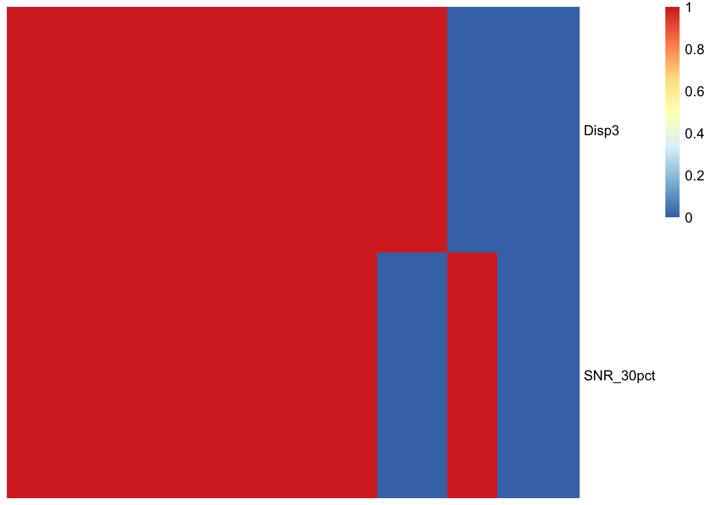
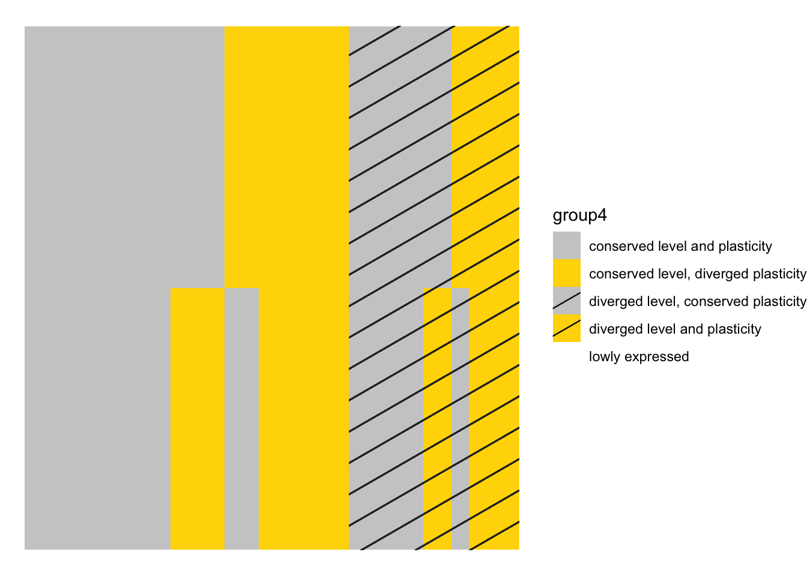
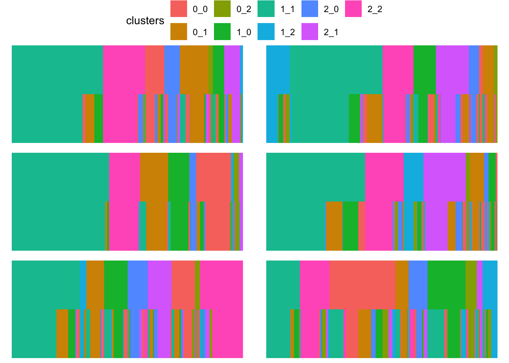
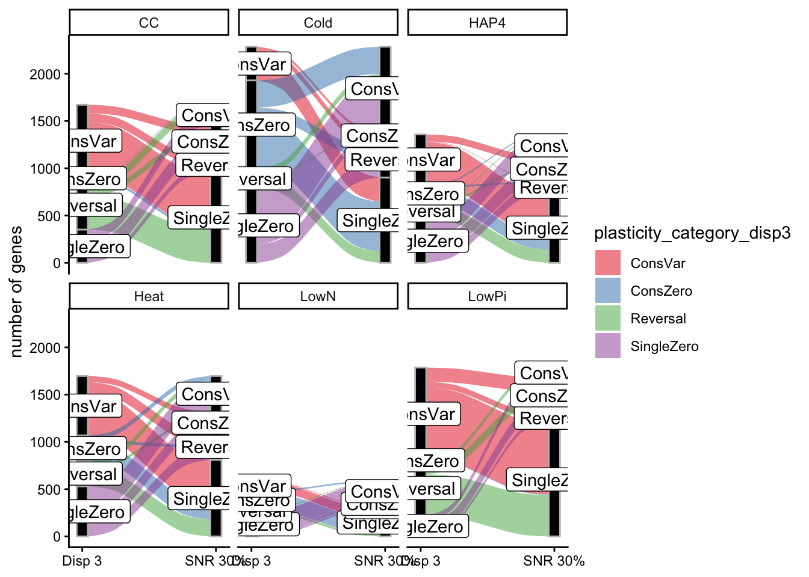

source("functions_for_figure_scripts.R")
library("pheatmap")
library("ggalluvial")
load("data_files/FinalDataframe3Disp.RData")
finaldf_Disp3 <- finaldf
rm(finaldf)
load("data_files/FinalDataframe_SNR30pct.RData")
finaldf_SNR30pct <- finaldf
rm(finaldf)
snrdf <- read_csv("data_files/QC_signal-to-noise.csv")## Rows: 53294 Columns: 9
## ── Column specification ───────────────────────────────────
## Delimiter: ","
## chr (3): gene_ID, experiment, species
## dbl (6): SNR_1, SNR_0.1, SNR_0.5, SNR_30pct, SNR_5pct, ...
##
## ℹ Use `spec()` to retrieve the full column specification for this data.
## ℹ Specify the column types or set `show_col_types = FALSE` to quiet this message.Discrete heatmaps of genes assigned to 0 cluster using different thresholds/criteria.
Comparing the main paper’s cluster criterion of Disp = 3 versus each version of signal to noise to find the one that is most similar to Disp = 3 assignments
plot_mat <- finaldf_Disp3 |> dplyr::select(gene_name, experiment, cer, par) |>
pivot_longer(cols = c("cer", "par"),
names_to = "species",
values_to = "Disp3") |>
left_join(snrdf, by = c("gene_name"="gene_ID", "experiment", "species"))
colnames_plotmat <- paste(plot_mat$gene_name, plot_mat$species,
plot_mat$experiment, sep = "_")
rownames_plotmat <- colnames(plot_mat)
plot_mat <- data.frame(plot_mat) |> t()
colnames(plot_mat) <- colnames_plotmat
rownames(plot_mat) <- rownames_plotmat
plot_mat <- plot_mat[!(rownames(plot_mat) %in% c("gene_name", "experiment", "species")),]
plot_mat <- plot_mat |> as.matrix()
mode(plot_mat) <- "numeric"
plot_mat[is.na(plot_mat)] <- 1 # currently only 1 NA value: YPR148C, Heat, cer, SNR 1pct
plot_mat[plot_mat != 0] <- 1
clrs <- structure(c("grey", "red"),
names = c(1, 0))
# sorting cols by Disp3's order
col_order_vec <- order(factor(plot_mat["Disp3",], levels = c(1, 0)))
# ordering full plotmat
ordered_plot_mat <- orderGenesByGroup(.mat = plot_mat[c("Disp3", "SNR_30pct"),], .labels = c(1, 0))
rownames(ordered_plot_mat) <- c("Disp3", "SNR_30pct")
pheatmap(ordered_plot_mat, cluster_rows = FALSE, cluster_cols = FALSE, show_colnames = FALSE)
4-group comparison between Disp3 and signal-to-noise 30%:
plotdf <- finaldf_Disp3 |> dplyr::select(gene_name, experiment, group4, cer, par) |>
dplyr::rename(c("group4_disp3"="group4",
"cer_disp3"="cer",
"par_disp3"="par"))
plotdf <- left_join(plotdf, dplyr::select(finaldf_SNR30pct, gene_name, experiment, group4, cer, par), by = c("gene_name", "experiment")) |>
dplyr::rename(c("group4_SNR30pct"="group4",
"cer_SNR30pct"="cer",
"par_SNR30pct"="par"))
plot_mat <- dplyr::select(plotdf, group4_disp3, group4_SNR30pct) |> t() |> as.matrix()
ordered_plot_mat <- orderGenesByGroup(.mat = plot_mat)
rownames(ordered_plot_mat) <- c("Dispersion 3", "Signal-to-noise 30%")
plotdf <- map(c("Dispersion 3", "Signal-to-noise 30%"), \(e) {
idx <- which(c("Dispersion 3", "Signal-to-noise 30%") == e)
return(tibble(gene_name = colnames(ordered_plot_mat),
environment = e,
group4 = ordered_plot_mat[idx,],
x = c(1:ncol(ordered_plot_mat)),
y = c(length(LongExperimentNames):1)[idx])) # descending from top
}) |> purrr::reduce(.f = bind_rows)
p <- ggplot(plotdf, aes(x = x, y = y, fill = group4)) +
geom_tile_pattern(aes(fill = group4, pattern = group4), pattern_fill = "black",
pattern_density = 0.05, pattern_size = 0.05) +
scale_fill_discrete(limits = colordf[colordf$scheme == "group4",]$limits,
type = colordf[colordf$scheme == "group4",]$type) +
scale_pattern_discrete(limits = colordf[colordf$scheme == "group4",]$limits,
choices = colordf[colordf$scheme == "group4",]$pattern) +
theme_void()
p
What types of plasticity divergence are the most different between dispersion and SNR?
plotdf <- finaldf_Disp3 |> dplyr::select(gene_name, experiment, group4, cer, par) |>
dplyr::rename(c("group4_disp3"="group4",
"cer_disp3"="cer",
"par_disp3"="par"))
plotdf <- left_join(plotdf, dplyr::select(finaldf_SNR30pct, gene_name, experiment, group4, cer, par), by = c("gene_name", "experiment")) |>
dplyr::rename(c("group4_SNR30pct"="group4",
"cer_SNR30pct"="cer",
"par_SNR30pct"="par"))
plotlist <- vector(mode = "list", length = length(ExperimentNames))
names(plotlist) <- ExperimentNames
for (e in ExperimentNames) {
plot_mat_e <- plotdf |> filter(experiment == e) |>
mutate(disp3 = paste(cer_disp3, par_disp3, sep = "_"),
SNR30pct = paste(cer_SNR30pct, par_SNR30pct, sep = "_")) |>
dplyr::select(disp3, SNR30pct) |> t() |> as.matrix()
ordered_plot_mat_e <- orderGenesByGroup(.mat = plot_mat_e,
.labels = unique(c(plot_mat_e[1,], plot_mat_e[2,])))
rownames(ordered_plot_mat_e) <- c("Dispersion 3", "Signal-to-noise 30%")
plotdf_e <- map(c("Dispersion 3", "Signal-to-noise 30%"), \(nm) {
idx <- which(c("Dispersion 3", "Signal-to-noise 30%") == nm)
return(tibble(gene_name = colnames(ordered_plot_mat_e),
method = nm,
clusters = ordered_plot_mat_e[idx,],
x = c(1:ncol(ordered_plot_mat_e)),
y = c(length(LongExperimentNames):1)[idx])) # descending from top
}) |> purrr::reduce(.f = bind_rows)
plotlist[[e]] <- ggplot(plotdf_e, aes(x = x, y = y, fill = clusters)) +
geom_tile(aes(fill = clusters)) +
theme_void()
}
ggarrange(plotlist = plotlist, nrow = 3, ncol = 2, common.legend = TRUE)
Alluvial plots of which of 4 plasticity categories are different between dispersion and signal to noise: 1) single 0s: 10, 01, 20, 02 2) conserved 0s: 00 3) reversals: 12, 21 4) conserved varying: 11, 22
# helper function to collapse 9 plasticity combinations into 4 categories we are interested in here
getPlasticityCategory <- function(.cer, .par) {
if (.cer == 0 & .par == 0) {
return("ConsZero")
}
if (.cer == 0 | .par == 0) {
return("SingleZero")
}
if (.cer != .par) {
return("Reversal")
}
if (.cer == .par) {
return("ConsVar")
}
}
# tests for getPlasticityCategory
getPlasticityCategory(0, 1)## [1] "SingleZero"getPlasticityCategory(0, 0)## [1] "ConsZero"getPlasticityCategory(0, 56)## [1] "SingleZero"getPlasticityCategory("bugs", 1)## [1] "Reversal"getPlasticityCategory(1, 1)## [1] "ConsVar"plotdf$plasticity_category_disp3 <- purrr::map2(plotdf$cer_disp3,
plotdf$par_disp3, .f = getPlasticityCategory) |> unlist()
plotdf$plasticity_category_SNR30pct <- purrr::map2(plotdf$cer_SNR30pct,
plotdf$par_SNR30pct, .f = getPlasticityCategory) |> unlist()
plotdf_counts <- plotdf |>
group_by(experiment, plasticity_category_disp3, plasticity_category_SNR30pct) |>
summarise(ngenes = n()) |>
ungroup()## `summarise()` has regrouped the output.
## ℹ Summaries were computed grouped by experiment,
## plasticity_category_disp3, and
## plasticity_category_SNR30pct.
## ℹ Output is grouped by experiment and
## plasticity_category_disp3.
## ℹ Use `summarise(.groups = "drop_last")` to silence this
## message.
## ℹ Use `summarise(.by = c(experiment,
## plasticity_category_disp3,
## plasticity_category_SNR30pct))` for per-operation
## grouping (`?dplyr::dplyr_by`) instead.category_counts <- plotdf |>
group_by(experiment, plasticity_category_disp3) |>
summarise(ncategory = n()) |>
ungroup()## `summarise()` has regrouped the output.
## ℹ Summaries were computed grouped by experiment and
## plasticity_category_disp3.
## ℹ Output is grouped by experiment.
## ℹ Use `summarise(.groups = "drop_last")` to silence this
## message.
## ℹ Use `summarise(.by = c(experiment,
## plasticity_category_disp3))` for per-operation grouping
## (`?dplyr::dplyr_by`) instead.plotdf_counts <- left_join(plotdf_counts, category_counts,
by = c("plasticity_category_disp3", "experiment"),
relationship = "many-to-one")
plotdf_counts$pctcategory <- plotdf_counts$ngenes/plotdf_counts$ncategory
is_alluvia_form(plotdf_counts, silent = TRUE)## [1] TRUEp <- ggplot(filter(plotdf_counts, plasticity_category_disp3 != plasticity_category_SNR30pct),
aes(y = ngenes, axis1 = plasticity_category_disp3, axis2 = plasticity_category_SNR30pct)) +
geom_alluvium(aes(fill = plasticity_category_disp3), width = 1/12) +
geom_stratum(width = 1/12, fill = "black", color = "grey") +
geom_label(stat = "stratum", aes(label = after_stat(stratum))) +
scale_x_discrete(limits = c("Disp 3", "SNR 30%"), expand = c(.05, .05)) +
scale_fill_brewer(type = "qual", palette = "Set1") +
facet_wrap(~experiment) +
theme_classic() +
ylab("number of genes")
p## Warning in to_lodes_form(data = data, axes = axis_ind,
## discern = params$discern): Some strata appear at multiple
## axes.
## Warning in to_lodes_form(data = data, axes = axis_ind,
## discern = params$discern): Some strata appear at multiple
## axes.
## Warning in to_lodes_form(data = data, axes = axis_ind,
## discern = params$discern): Some strata appear at multiple
## axes.